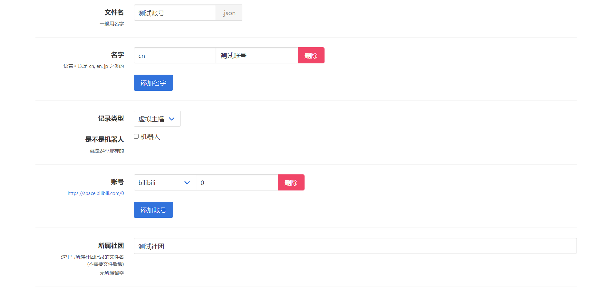
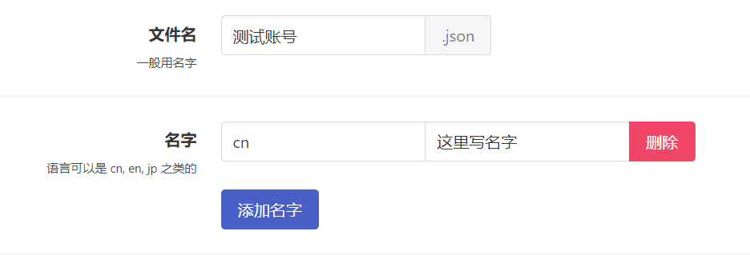
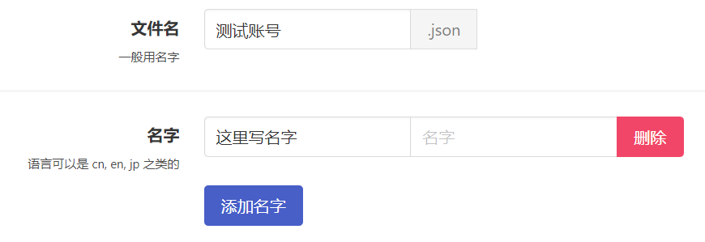
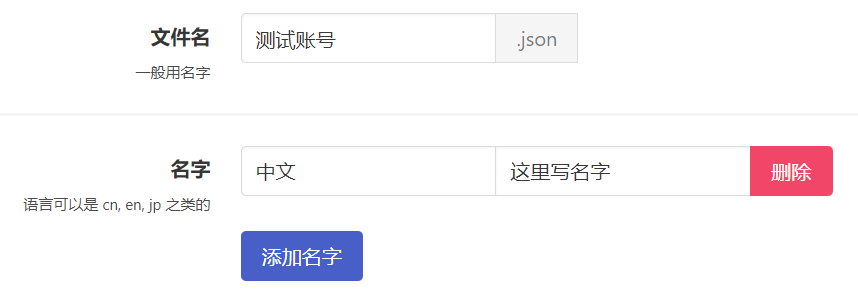
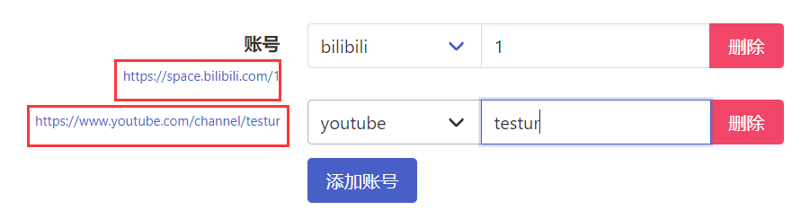

创建并提交 VTB

创建
-
点击左下角
新建按钮。 -
请将 VTB 的
ID填入到文件名。
添加名字：易错步骤
- 点一下
添加名字按钮，从cn、en、jp（中文名请填写cn，英文名请选择en，日文名请选择jp）等当中挑选合适的填入语言输入栏（位于蓝色添加名字按钮的正上方）。 - 将
ID或VTB 的其他名字填入名字（位于语言输入栏右侧）。 - 请务必标准填写语言与名字。
添加名字：正确的例子

添加名字：常见错误

添加名字：常见错误

-
如有多个名字，请点击
添加名字按钮并重复上一步骤。 -
不需要更改
记录类型。 -
如果是AI 直播或由程序控制的形象等非真人直播，请勾选
机器人，一般情况也不需要更改。 -
单击
添加账号按钮，选择平台并完善平台信息，然后单击一下左侧的预览确认无误（注意这里哔哩哔哩平台应填写 UID 而非 ID，纯数字）。 -
如果 VTB 有其他平台的账号，请点击
添加账号按钮并重复上一步骤（海外 VTB 建议完善外网账号，YouTube 账号一般请用新版youtubeAt而非旧版youtube）。
一定要验证账号是否正确添加

点击并打开每个账号左侧蓝色的网页链接（图中被红框框住的区域）。
若链接可以正确打开并指向您提交的 VTB，便意味着该账号已经被正确添加了。
反之则代表您的账号信息填写有误，请仔细检查，错误的账号信息不会通过审核。
- 个人势 VTB 请将
所属社团留空，有社团的 VTB 请先在所属社团内尝试搜索社团名，并在下方的搜索结果内选择正确的名字。
所属社团搜不到怎么办
搜索不到相关社团意味着该社团未收录，请务必先执行添加社团操作。
请勿直接输入社团名字！空着都比输一个未收录的社团好！
直接输入一个未收录的社团会给审核员带来很大的困扰！哪天心情不好直接给你 close 了！
虽然大多数情况还是会辛苦审核员自行修改。
添加的社团将会以社团收录标准进行审核，社团不达标的作为个人势收录。
保存
- 拉到最下面，点一下
保存。
提交
- 拉上去，点一下
提交!(1)。
重要
仔细看测试部分，如果出现Error: 0，则没有问题，否则你的申请大概率不会通过，请根据提示进行更改。
-
点击下方提交按钮，出现网页链接后即代表提交成功，我们会有人工成员进行审核，可能需要几天时间。
-
如果需要再次提交 VTB 或社团，请务必刷新网页后重复上述操作，一次提交一个，不要直接前往新建菜单。